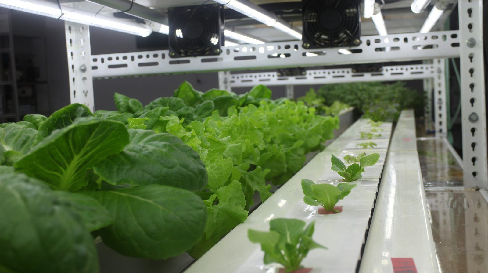
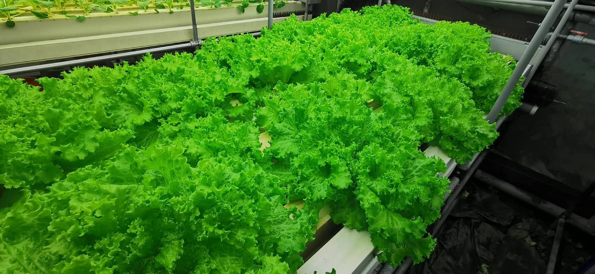
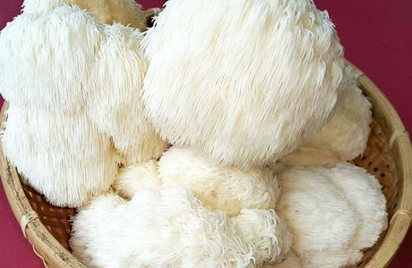
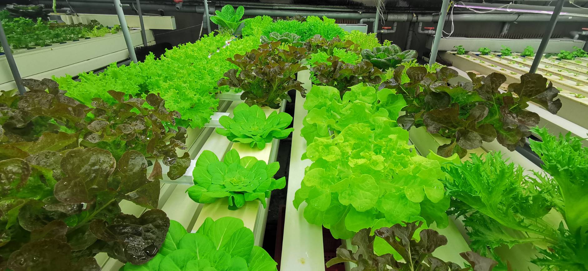

01・2024–2025
我們怎麼開始
一開始，我們只是想試試看：在臺北這樣的城市裡，能不能不靠農藥，種出每天都吃得到的好菜？
城市土地有限，又得面對蟲害和天氣，最後我們選了魚菜共生——魚的排泄物經微生物轉化成蔬菜的養分，蔬菜淨化過的水再回到魚池，同一份水反覆循環。
原理不難，難的是長期穩定。魚和菜住在同一套系統裡，需求卻不同，水溫、酸鹼值、光照稍有偏差，不是魚生病就是菜長不好。
2024 年，我們把物聯網帶進農場：感測器持續記錄水溫、酸鹼值和溶氧，燈光、風扇自動運作，一有異常手機就收到通知。2025 年，北投的第一座農場正式成立，種的菜也越來越多樣。
我們原本以為，最難的部分已經過去了。
直到菜真的種出來，我們才發現，接下來最難解決的問題，竟然不在農場裡。

02
我們遇到的事
萵苣一批批採收，我們卻發現：好菜種得出來，不一定賣得出去。缺少穩定的銷售管道，種得再好，也很難讓更多人吃到。
於是我們主動去接觸上市櫃公司，一步步替自己的菜找到穩定的客人，也做了自己的訂購系統。
這段路上我們也做了調查，發現很多農友卡在同一個地方：種得很用心，卻不知道要賣給誰。

03・2026
所以，我們做了這個市集


